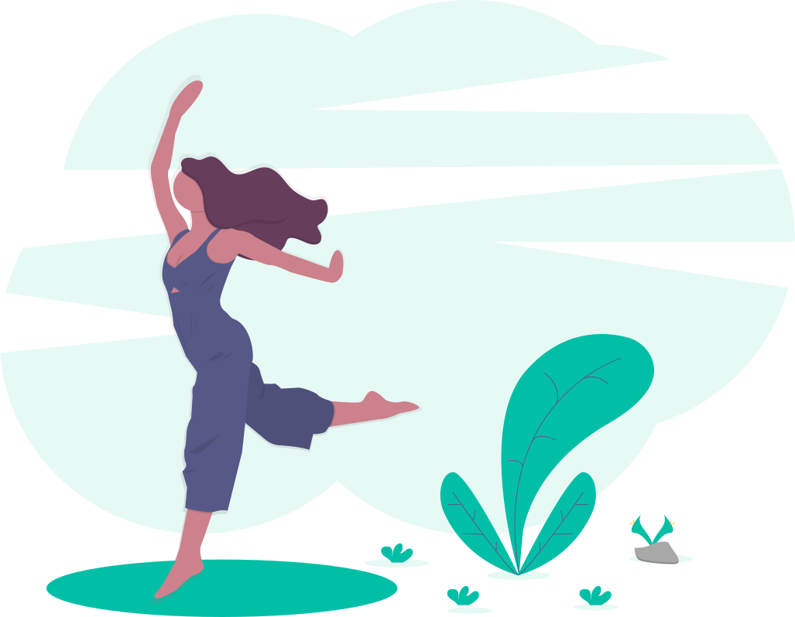
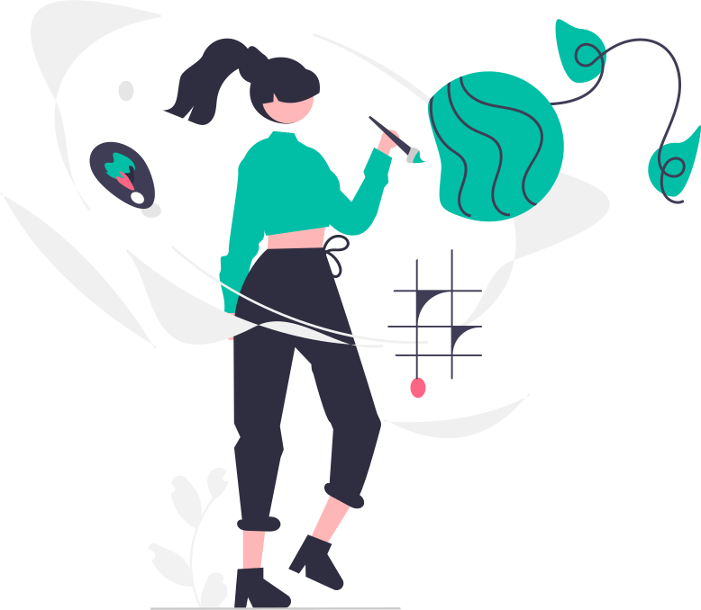

Activa't
Activitats per posar en marxa el nostre motor vital; pilates, ioga, gimnàstica, zuma… i moltes altres més.

Relaciona't
Activitats grupals a on aprendre diferents estils de ball i a la vegada relacionar-se amb més gent.

Crea't
Activitats relacionades amb la creativitat i la estimulació de la psicomotricitat fina; brodats, guitarra…

Forma't
Activitats per treballar el sistema cognitiu i a la vegada aprendre; memòria, idiomes, informàtica…